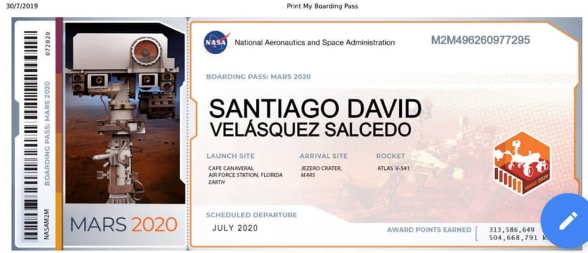
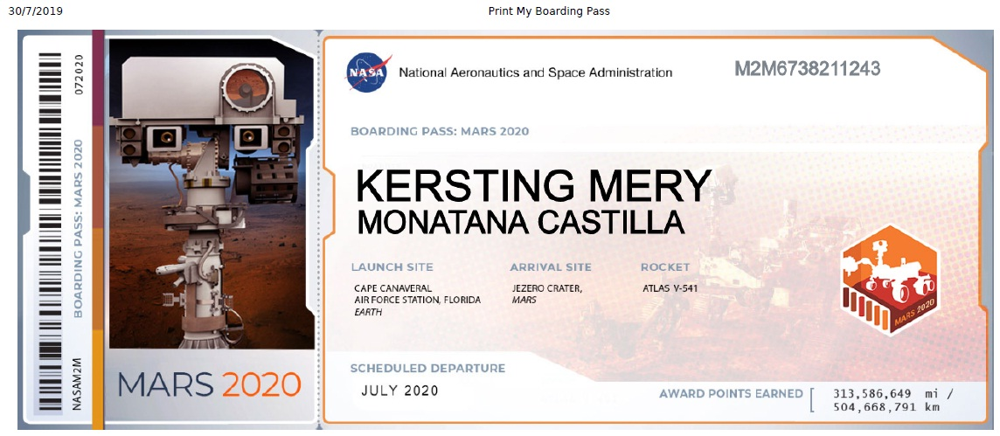
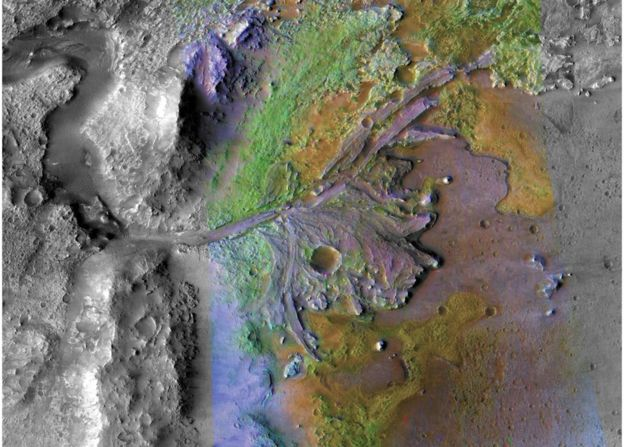

Lanzamiento 20 de Julio 2020 Cohete Atlas V-541 Nave Orion.
construido por Lockheed Martin y Boeing..
Lanzamiento 20 de Julio 2020 Cohete Atlas V-541 Nave Orion
construido por Lockheed Martin y Boeing.

Mi Bording Pass para el planeta Rojo
Lauch
Complejo de Lanzamiento Espacial 41 en la Estacion de la Fuerza Aerea de Cabo Canaveral en Florida
Sera un crucero de siete meses al Planeta Rojo
313.586.649 Millas o 504.668.791 Kilometros a Recorrer

Mi Bording Pass para el planeta Rojo
Cruise/Approach
De 8 a 9 meses de viaje
Entrada, descenso y aterrizaje
El rover lleva una variedad de instrumentos cientificos disenados por un equipo internacional MSL, EDL
Mi Bording Pass para el planeta Rojo
Entry, Descent & Landing
Sobrevivir al llamado 7 minutos del horror que implica su descenso a la superficie
Crater Jezero, localizado en el Cuadrangulo de Syrtis major
Su nombre Cuadrangulo alude al golfo de Sidra, en Libia

La imagen de satalite de Jezero muestra una fuerte evidencia de la presencia pasada de un lago y un delta.
Surface Mision
El principal objetivo de la mision sera encontrar signos de antigua habitabilidad en el planeta Marte en el pasado remoto
Bitacora de Vuelo
Noticias
El mensaje codificado en los rayos del sol es: ′′ Si se encuentra, por favor, regresa al gran planeta de la izquierda.
Grabado en un haz de electrones en tres chips de silicio
Un total de 10.932.295 nombres fueron grabados en un haz de electrones en tres chips de silicio
del tamaño de una uña, junto con los ensayos de los 155 finalistas en el concurso "Ponle nombre
al rover" de la NASA. Luego, los chips se unieron a una placa de aluminio en el rover Perseverance
Mars de la NASA en el Centro Espacial Kennedy en Florida el 16 de marzo. Perseverance aterrizará en
el cráter Jezero el 18 de febrero de 2021
Los tres chips comparten espacio en la placa anodizada con un gráfico grabado con láser que representa
la Tierra y Marte unidos por la estrella que les da luz a ambos. Mientras conmemora el rover que
conecta los dos mundos, la simple ilustración también rinde homenaje a la elegante línea de arte
de las placas a bordo de la nave espacial Pioneer y los registros dorados llevados por los Voyagers 1
y 2. Fijado en el centro del travesaño de popa del rover, la placa será visible para las cámaras
en el mástil de Perseverance, informa la NASA.
Desde la izquierda, la tierra, el sol y Marte. La Tierra y Marte podrían ser de tamaño proporcional.
El sol no es. Las distancias de la Tierra y Marte del Sol también podrían ser proporcionales.